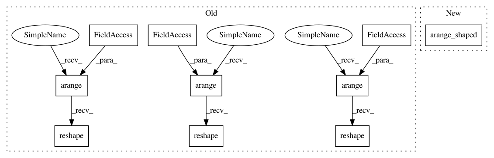

8755c48bb903005a7e819998d51ba41ba892814f,test/graph_builder_test/graph_test/frontend_test/sub_rules_test/concat_affine_test.py,,test_conv_scale_bias,#,194
Before Change
w_shape = [4, 3, 3, 5]
w_size: int = np.prod(w_shape)
w = ConstantVariable(np.arange(w_size).reshape(w_shape), OrderNHWC)
w.change_axis_order(order_w)
w_data = w.data.copy()
h, = conv(x, w)
s_shape = [h.shape_dict[Axis.C]]
s_size: int = np.prod(s_shape)
s = ConstantVariable(np.arange(s_size).reshape(s_shape), OrderC)
s_data = s.data.copy()
h, = scale(h, s)
b_shape = [h.shape_dict[Axis.C]]
b_size: int = np.prod(b_shape)
b = ConstantVariable(np.arange(b_size).reshape(b_shape), OrderC)
b_data = b.data.copy()
y, = bias(h, b)
After Change
w_shape = [4, 3, 3, 5]
w_size: int = np.prod(w_shape)
w = ConstantVariable(arange_shaped(w_shape), OrderNHWC)
w.change_axis_order(order_w)
w_data = w.data.copy()
h, = conv(x, w)
In pattern: SUPERPATTERN
Frequency: 3
Non-data size: 10
Instances
Project Name: mil-tokyo/webdnn
Commit Name: 8755c48bb903005a7e819998d51ba41ba892814f
Time: 2017-05-07
Author: hidaka@mi.t.u-tokyo.ac.jp
File Name: test/graph_builder_test/graph_test/frontend_test/sub_rules_test/concat_affine_test.py
Class Name:
Method Name: test_conv_scale_bias
Project Name: mil-tokyo/webdnn
Commit Name: 8755c48bb903005a7e819998d51ba41ba892814f
Time: 2017-05-07
Author: hidaka@mi.t.u-tokyo.ac.jp
File Name: test/graph_builder_test/graph_test/frontend_test/sub_rules_test/concat_affine_test.py
Class Name:
Method Name: test_conv_bias_scale
Project Name: mil-tokyo/webdnn
Commit Name: 8755c48bb903005a7e819998d51ba41ba892814f
Time: 2017-05-07
Author: hidaka@mi.t.u-tokyo.ac.jp
File Name: test/graph_builder_test/graph_test/frontend_test/sub_rules_test/concat_affine_test.py
Class Name:
Method Name: test_conv_scale_scale
Project Name: mil-tokyo/webdnn
Commit Name: 8755c48bb903005a7e819998d51ba41ba892814f
Time: 2017-05-07
Author: hidaka@mi.t.u-tokyo.ac.jp
File Name: test/graph_builder_test/graph_test/frontend_test/sub_rules_test/concat_affine_test.py
Class Name:
Method Name: test_conv_scale_bias